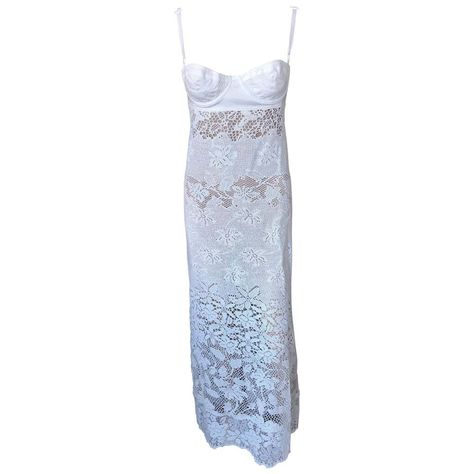
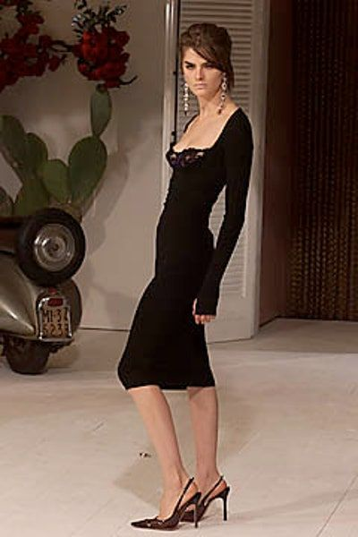
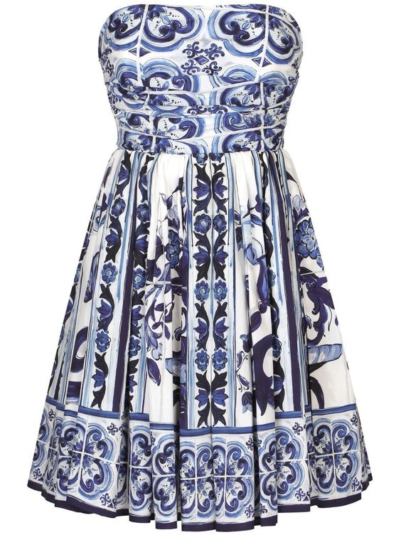

DOLCE & GABANNA DRESSES

This is a lovely summer dolce and gabbana dress. It is the sheer knit 2005 crochet lace ivory gown. It is beauiful for a night out or for a calm beach day.

This dress is from the 2001 spring read-to-wear fashion show. The beautiful square neckline compliments the fitted silhouette of the dress. The length makes it perfect for an elegant night out or dinner party.

This is a lovely short summer dress. It is perfect for a summer in greece and for strolling on the beaches. It is summery, cute and can be paired with white heels or dressed down with white golden goose sneakers.
D & G Website